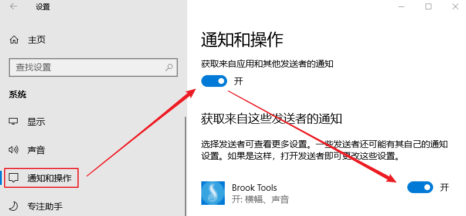

其实我在写 Brook Tools 之前，就写好了 Goflyway Tools ，但是考虑到这个软件的各平台生态太差，就改了改先出了 Brook Tools 工具，最近见到有人要我就把 Goflyway 发出来好了，目前该软件主要支持 Windows Linux 系统，安卓系统客户端还是测试版本，IOS短时间别指望了。
Goflyway Linux 一键脚本：『原创』Go语言轻量化 HTTP Tunnel 代理工具 —— GoFlyway 一键安装管理脚本
Goflyway Linux 手动教程：一个由Go语言编写的轻量化 HTTP Tunnel 代理工具 —— GoFlyway
其他 Goflyway 教程请看：https://doub.io/tag/goflyway/
当前版本：1.0.11
主要功能
- 支持 多服务器管理
- 支持 直连模式、PAC模式、全局模式
- 支持 生成/导入 分享链接功能（分享链接格式）
- 支持 HTTP、KCP、CDN、WebSocket 传输协议
- 支持 账号自检
- 支持 开机启动
- 等等
直连模式说明：
PAC模式、全局模式很多人能理解是什么意思，但是部分人不清楚直连模式是什么鬼，我就简单解释一下。
你们知道 PAC模式和全局模式就是软件设置了系统代理设置，然后浏览器会读取系统代理模式，比如访问谷歌，会判断PAC内是否有谷歌域名，如果有就走代理，如果没有就直连，而全局模式则是所有网站走代理。
而直连模式则代表不设置系统代理模式，选择后会初始化系统代理设置。然后就需要在相应软件中配置代理服务器 HTTP协议 127.0.0.1 8100(默认)，这样相应软件才会走代理，例如 Chrome 浏览器代理管理扩展 SwitchyOmega（点击查看新手使用教程）。
截图展示
使用方法
本软件是一个辅助软件（可视化UI操作），他无法独立使用，需要配合 Goflyway Windows命令行版客户端使用。
所以要使用该软件请先下载 Goflyway Windows命令行版客户端：逗比云地址 、Github地址（请选择 goflyway_windows_386.zip 或 goflyway_windows_amd64.zip）。
为了方便大家使用，我把32位和64位的命令行版客户端都集成在压缩包内了，打开软件后选择相应的命令行版客户端即可（官方命令行版客户端可能会更新，到时间请手动更新或提醒我更新压缩包）。
下载 Goflyway Windows命令行版客户端后，放置到任何位置（路径中不能包含中文和空格，否则PAC失效）- 下载 Goflyway Tools 客户端文件，解压后放置到任何位置，并运行软件。
- 运行软件后填写 Goflyway 账号或者导入 Goflyway 分享链接，并点击 浏览 按钮，选择命令行版客户端文件（拖拽文件到软件窗口中）。
- 点击 启动 按钮（或者右键托盘菜单 - 启动）。
- 根据需求在 托盘菜单 - 代理模式 中可以选择 直连模式、PAC模式（默认）、全局模式。
无法使用？请先使用 [账号自检] 功能检测账号是否可用。
如果提示可用，那么请尝试 检查系统代理设置(点击看教程)！
如果账号不可用，那么可以试试我 免费分享的 Goflyway 账号！
下载地址
注意：每次更新最新版本时，因为微软审核需要一天左右的时候，所以这期间 Windows Defender 会报毒，请选择信任或者等待两天后再用。
更新内容
2018年09月28日，版本 v1.0.11
1. 新增 KCP传输协议。
2. 新增 分享链接支持包含账号协议、备注内容。
3. 新增 自定义日志级别。
4. 新增 支持自定义命令行客户端文件名（不再固定为 goflyway.exe）。
5. 新增 各输入框都添加了提示说明文本（鼠标指向输入框）。
6. 修改 客户端模式 相关文字为 客户端协议。
7. 修改 客户端协议中的 [无(默认模式)] 文字为 [HTTP模式] 。
分享链接格式为：Base64加密(IP:端口@Base64(密码):协议@备注)
Base64 加密均为URL保护模式：去除空格和等号(=)，替换加号(+)为减号(-)，替换斜杠(/)为下划线(_)。
注意事项
- 该软件仅支持 Windows 系统，至于 Linux 和 Mac 用户...（
 啦啦啦~）
啦啦啦~） - Windows 7 及以后的系统如无法使用部分功能，请 [以管理员身份运行]。
- 该软件由 E语言 编写(重拾初中姿势)，所以部分杀毒软件可能报毒，我原创的软件绝对没有病毒！
其他说明
分享链接格式
分享链接格式为：Base64加密(IP:端口@Base64(密码):协议@备注)
Base64 加密均为URL保护模式：去除空格和等号(=)，替换加号(+)为减号(-)，替换斜杠(/)为下划线(_)。
无法连接到 Goflyway 账号的可能原因之一
因为 Goflyway 每次更新的内容可能变动较大，所以如果客户端与服务端版本不一致，那么很有可能会导致客户端链接服务端被拒绝。包括我的 Goflyway Tools 里调用的 Windows 命令行版客户端，所以请尝试更新服务端或客户端为最新版本。
账号自检失败，可能的原因 一
Windows 防火墙阻挡代理软件。
关于 CDN模式 WebSocket 模式 与 服务端之间关系 的说明
为了避免大家迷茫或者误解，所以我对 客户端模式与服务端之间关系说明一下：
Windows 10 系统不显示启动/停止/账号自检等通知信息
这个问题一般是因为 Windows 10 系统的通知被关闭导致的，请去控制面板 - 通知和操作 - 开启 获取来自应用和其他发送者的通知 。
懒得截图，图片用的是 Brook Tools 文章里的，不要在意~

有问题或者反馈BUG（需提供可复现步骤）请在下面留言！
转载请超链接注明：逗比根据地 » 『原创』更方便的Windows系统 Goflyway 客户端 —— GoFlyway Tools
责任声明：本站一切资源仅用作交流学习，请勿用作商业或违法行为！如造成任何后果，本站概不负责！


前者因为客户端没有日志输出，所以我就直接用系统的运行命令（就是 Win键+R键 弹出的哪个运行）运行了Brook客户端启动代码。
后者因为客户端会输出日志，所以为了读取日志方便（我写的客户端要显示实时日志内容），所以我在我的 Goflyway Tools 里加入了管道代码，建立了一个于CDM之间的管道，这样我直接通过管道运行Goflyway客户端启动代码（写到run.bat脚本再运行 和 直接运行启动代码没区别），同时又可以实时获取CMD输出的内容（客户端日志）。
如果我用 Brook Tools 那样启动 Goflyway 客户端并输出日志内容到文件，这样日志文件会被CMD独占，我的客户端无法读取这个日志文件的内容，就没办法在客户端里显示实时日志了。所以当初我写软件的时候是来会研究了好几遍，找了个最合适的方式。
教程可以参考这个教程，不过这个是 brook的，你只需要忽略名字，并且把协议改成HTTP，端口改成Goflyway的本地端口就行了。
直连模式代表不设置系统代理设置（相当于初始化系统代理设置），需要你自行设置系统代理设置或者浏览器代理设置（例如代理管理扩展）
请检查系统代理设置或者浏览器代理设置。
系统代理设置的话，可以参考这个：https://doub.io/ss-jc39/#2.2.2、系统代理设置问题
非必需不建议使用，还有很多问题。
另外，刚才发现我网站的免费 Goflyway（CDN模式的）挂了。。。已经修复了，你再试试。
E语言所写的软件，很多杀毒软件都是无脑报毒。我连加壳都懒得加壳了，反正加不加壳都有报毒。
可能是这个行为导致了一些杀毒软件觉得可能具有危险性。
另外我刚才更新版本的时候，还原为旧运行方式了(脚本运行)，你在看看是否报毒。
https://github.com/coyove/goflyway/releases/download/v1.1.0a-apk/ss-align-signed.apk
账号自检功能我测试正常。
还有其他问题请 Telegram群组(TG使用教程)私聊联系我讨论解决。